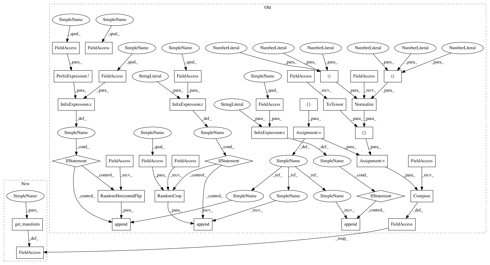

25124b8389f80d7a509b2d98ef69589cab597c9a,data/unaligned_dataset.py,UnalignedDataset,initialize,#UnalignedDataset#Any#,11
Before Change
self.A_size = len(self.A_paths)
self.B_size = len(self.B_paths)
transform_list = []
if opt.resize_or_crop == "resize_and_crop":
osize = [opt.loadSize, opt.loadSize]
transform_list.append(transforms.Scale(osize, Image.BICUBIC))
if opt.isTrain and not opt.no_flip:
transform_list.append(transforms.RandomHorizontalFlip())
if opt.resize_or_crop != "no_resize":
transform_list.append(transforms.RandomCrop(opt.fineSize))
transform_list += [transforms.ToTensor(),
transforms.Normalize((0.5, 0.5, 0.5),
(0.5, 0.5, 0.5))]
self.transform = transforms.Compose(transform_list)
def __getitem__(self, index):
A_path = self.A_paths[index % self.A_size]
B_path = self.B_paths[index % self.B_size]
After Change
self.B_paths = sorted(self.B_paths)
self.A_size = len(self.A_paths)
self.B_size = len(self.B_paths)
self.transform = get_transform(opt)
def __getitem__(self, index):
A_path = self.A_paths[index % self.A_size]
B_path = self.B_paths[index % self.B_size]
In pattern: SUPERPATTERN
Frequency: 4
Non-data size: 35
Instances
Project Name: junyanz/pytorch-CycleGAN-and-pix2pix
Commit Name: 25124b8389f80d7a509b2d98ef69589cab597c9a
Time: 2017-07-06
Author: tongzhou.wang.1994@gmail.com
File Name: data/unaligned_dataset.py
Class Name: UnalignedDataset
Method Name: initialize
Project Name: richzhang/colorization-pytorch
Commit Name: 25124b8389f80d7a509b2d98ef69589cab597c9a
Time: 2017-07-06
Author: tongzhou.wang.1994@gmail.com
File Name: data/single_dataset.py
Class Name: SingleDataset
Method Name: initialize
Project Name: junyanz/pytorch-CycleGAN-and-pix2pix
Commit Name: 25124b8389f80d7a509b2d98ef69589cab597c9a
Time: 2017-07-06
Author: tongzhou.wang.1994@gmail.com
File Name: data/unaligned_dataset.py
Class Name: UnalignedDataset
Method Name: initialize